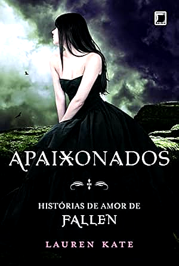

Apaixonados
Descrição
Antes que o mundo acabasse, o amor falou mais alto. Quatro histórias ambientadas no Dia dos Namorados mostram diferentes faces do romance entre anjos, humanos e nefilins. Um respiro doce e encantador entre batalhas e profecias, para lembrar que amar também é um ato de coragem.
- Autor(a): Lauren Kate
- Número de páginas: 182